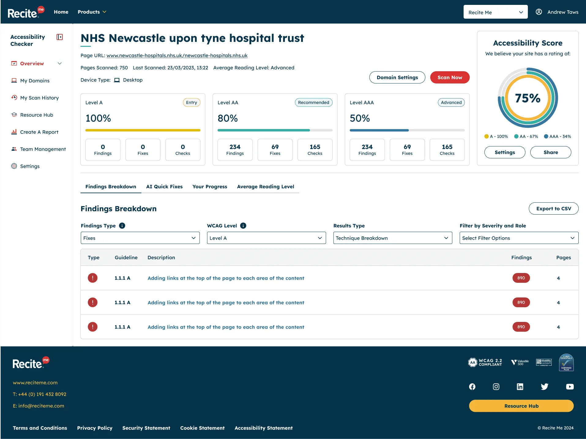
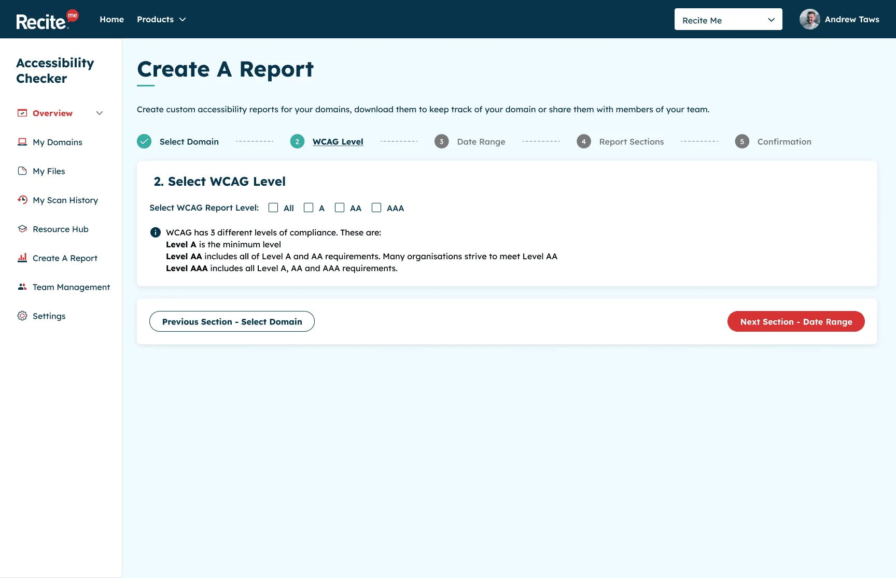
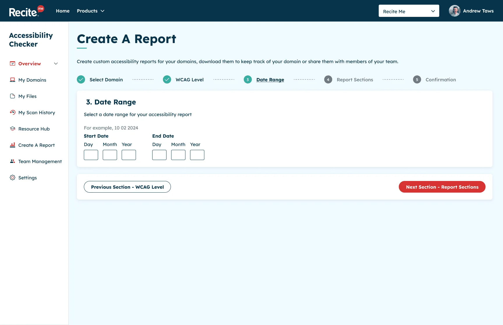

Taws.Design
Design system
The tokens, styles and components used to build this site. Everything here is accessible by default and ready to reuse on new pages.
Principles
- Accessible by default. Every component meets WCAG 2.2 AA out of the box: contrast, focus, target size, semantics. Using the component as documented is enough.
- Tokens, not values. Components only read CSS custom properties from
tokens.css. Change a token and the whole site follows. - HTML first. Native elements (
<details>,<nav>,<dl>,<button>) before ARIA. JavaScript only where HTML can’t do the job, and always as an enhancement. - Copy, paste, adjust. Every example on this page is the real markup. Copy it into a page and change the content.
Files
Load the three stylesheets in this order on every page:
assets/css/tokens.css: fonts and design tokens (colour, type, spacing, shape)assets/css/base.css: reset, element styles, typography, focus and utility classesassets/css/components.css: every component below, in BEM naming (.block__element--modifier)
Starting a page? Copy a file from the templates/ folder. See page templates.
Colour
Primitive tokens hold the raw values. Components use the semantic tokens (--color-text, --color-action and so on), so a theme change happens in one place. The ratio shown is against the page canvas (#fffcfc), or against black for the dark-surface focus colour.
- Text, headings, links
--navy-900#07354d12.7:1, AA text - Primary buttons
--navy-800#06334a13.0:1, AA text - Button hover
--navy-700#0d47669.8:1, AA text - Muted text
--slate-600#4a65756.0:1, AA text - Page canvas
--snow-50#fffcfcSurface - Card surface
--sand-100#f3f1efSurface - Raised surface, inputs
--white#ffffffSurface - Media band behind screenshots
--sky-200#b8d3edSurface - Footer
--black#000000Surface - Focus ring on light
--amber-700#b35c004.6:1, AA text - Focus ring on dark
--amber-300#ffb84d12.2:1, AA text - Decorative accent only
--amber-500#e8890c2.6:1, not for text - Status dot (decorative)
--green-500#16a0853.2:1, not for text - Errors
--red-700#b423186.4:1, AA text - Figma frame (decorative)
--violet-500#8f55e44.5:1, not for text - Accent pill background
--violet-100#ece2fb1.2:1
| Semantic token | Maps to | Use for |
|---|---|---|
--color-bg | --snow-50 | Page background |
--color-surface | --sand-100 | Cards, summary boxes, form panels |
--color-text / --color-heading | --navy-900 | All body text and headings |
--color-text-muted | --slate-600 | Hints, labels in metadata |
--color-action | --navy-800 | Primary buttons, nav call to action |
--color-focus | --amber-700 | Focus outlines on light surfaces |
--color-focus-inverse | --amber-300 | Focus outlines inside .on-dark |
--color-media-band | --sky-200 | Full-width band behind screenshots |
--color-accent | --amber-500 | Greeting underline, icon circles. Never text. |
--color-error | --red-700 | Error text and borders |
--color-frame | --violet-500 | Figma frame outline and handles. Decorative only. |
Typography
Albert Sans (400–700) for everything, Borel for the greeting, and Inter Black for the footer display line. All fonts are self-hosted. Sizes are fluid between 320px and 1440px viewports using clamp(), so text also scales with browser zoom.
| Style | Token / class | Size | Weight |
|---|---|---|---|
| Heading 1 | h1, .h1, --text-h1 | 40–72px | 700 |
| Heading 2 | h2, .h2, --text-h2 | 26–32px | 600 |
| Heading 3 | h3, .h3, --text-h3 | 22–29px | 500 |
| Heading 4 | h4, .h4 | 20–24px | 700 |
| Lead paragraph | .lead, --text-lead | 20–24px | 500 |
| Body text | body, --text-base | 18px | 400 |
| Label | --text-label | 16px | 700 |
| Small text | .text-sm, --text-sm | 15px (minimum) | 400–700 |
| Alreet! | .greeting, --font-script | 24px | 400 |
| Display | .site-footer__title, --text-display | 40–70px | 900 |
Keep one <h1> per page and never skip a heading level. If a heading needs to look smaller than its level, use a class: <h2 class="h4">.
Spacing, shape and focus
A 4px-based scale. Use tokens for every margin, padding and gap.
| Token | Value | Visual size |
|---|---|---|
--space-1 | 4px | |
--space-2 | 8px | |
--space-3 | 12px | |
--space-4 | 16px | |
--space-5 | 24px | |
--space-6 | 32px | |
--space-7 | 48px | |
--space-8 | 64px | |
--space-9 | 96px | |
--space-10 | 128px |
| Token | Value | Use for |
|---|---|---|
--radius-sm | 4px | Cards, buttons, images, inputs |
--radius-lg | 18px | Footer top corners |
--focus-width / --focus-offset | 3px / 3px | The focus ring used by every interactive element (WCAG 2.4.7, 2.4.13) |
--target-min | 44px | Minimum height of every link and button that isn’t inline in text (WCAG 2.5.8) |
--container-max | 1200px | .container width |
--container-narrow | 1110px | .container--narrow, used on case studies |
--container-prose | 640px | Maximum line length for body copy |
Layout
Container
Centres content with responsive side gutters. Add container--narrow for case study width.
Content sits inside a 1200px column with fluid gutters.
<div class="container">
<p>Content sits inside a 1200px column with fluid gutters.</p>
</div>Split section
The case study pattern: heading on the left, content on the right. Stacks on small screens. The heading becomes sticky on wide screens.
Overview
Body copy, lists and sub-headings go here.
<section class="split">
<h2 class="split__heading">Overview</h2>
<div class="prose">
<p>Body copy, lists and sub-headings go here.</p>
</div>
</section>Media band
A full-width light blue band for screenshots. Place it between containers, never inside one, so it can reach the screen edges. media-band--plain uses the card colour instead.

<div class="media-band">
<div class="container">
<figure class="figure figure--contained">
<img src="assets/images/shared/checker-dashboard.webp" width="1915" height="1436"
alt="Describe what the screenshot shows" loading="lazy">
</figure>
</div>
</div>Layout helpers
.flow adds consistent space between siblings. .stack is a vertical flex column, .cluster a wrapping row. Set --flow-space, --stack-gap or --cluster-gap to adjust.
- Cluster item
- Wraps when space runs out
- Gap from a token
<ul class="cluster">
<li class="chip chip--outline">Cluster item</li>
<li class="chip chip--outline">Wraps when space runs out</li>
<li class="chip chip--outline">Gap from a token</li>
</ul>Components
Buttons
Use <a class="btn"> for navigation and <button class="btn"> for actions. Variants: btn--primary, btn--secondary, btn--inverse and btn--ghost-inverse (on dark backgrounds), and btn--block for full width.
Accessibility: 44px minimum height. Icons are hidden from assistive tech with aria-hidden="true", so the visible text is the accessible name. Links that open a new tab add <span class="visually-hidden"> (opens in a new tab)</span>.
<div class="cluster">
<a class="btn btn--primary" href="#components">Primary</a>
<a class="btn btn--secondary" href="#components">Secondary</a>
<button class="btn btn--primary" type="button">
<svg class="btn__icon" viewBox="0 0 24 24" aria-hidden="true" focusable="false"><path d="M11 3h2v9.6l3.3-3.3 1.4 1.4L12 16.4l-5.7-5.7 1.4-1.4 3.3 3.3V3ZM4 18h16v2H4v-2Z"/></svg>
With icon
</button>
</div>Buttons on dark
Inside .on-dark the focus ring switches to the light amber automatically.
<div class="on-dark cluster" style="background:var(--black);padding:var(--space-5);border-radius:var(--radius-sm)">
<a class="btn btn--inverse" href="#components">Inverse</a>
<a class="btn btn--ghost-inverse" href="#components">Ghost inverse</a>
</div>Scroll reveal
Content below the fold fades gently up into view as the page scrolls. Anything already on screen when the page loads shows straight away. Add data-reveal to a section, band, card or list item. data-reveal="words" makes a short plain-text heading rise in word by word instead, as on the footer title, and data-reveal-stagger sets the gap in seconds (0.04 by default). For intro text, as on the original site, data-reveal="intro-chars" (greetings, eyebrows) and data-reveal="intro-words" (page headings) make letters or words rise 10px and blur into focus, including on load. data-reveal-delay holds one back, so the heading follows the greeting. Needs assets/js/scroll-reveal.js.
Accessibility: Nothing is hidden without JavaScript or with reduced motion on. Anything that gets keyboard focus shows immediately. For words, screen readers get one hidden copy of the full text, so it’s never read in fragments.
Alreet!
Words blur into focus
This box fades up when it scrolls into view. If it was already on screen when the page loaded, it just shows.
<p class="greeting" data-reveal="intro-chars">Alreet!</p>
<h2 class="h3" data-reveal="intro-words" data-reveal-delay="0.3">Words blur into focus</h2>
<div data-reveal class="callout">
<p>This box fades up when it scrolls into view. If it was already on screen when the page loaded, it just shows.</p>
</div>Page transition
Every page change has a short fade: the old page fades out in 0.15s and the new one fades in over 0.25s with an 8px rise. It’s set once in components.css with @view-transition, so new pages get it automatically. Timings are the --duration-page-out and --duration-page-in tokens.
Accessibility: off for reduced motion. Browsers without view transitions (currently Firefox) simply load the page. It doesn’t affect focus or what screen readers announce.
Greeting and eyebrow
The handwritten greeting and the small label above case study headings, both with the amber underline. Use them above an <h1>.
Alreet!
UX design case study · Recite Me
<p class="greeting">Alreet!</p>
<p class="eyebrow">UX design case study · Recite Me</p>Chips
Category labels on cards, and outlined chips for lists of skills. Use chip-list on a <ul> for groups.
UX Design Case Study
- Design systems
- User research
<p class="chip">UX Design Case Study</p>
<ul class="chip-list" aria-label="Specialisms" style="margin-block-start: var(--space-4)">
<li class="chip chip--outline">Design systems</li>
<li class="chip chip--outline">User research</li>
</ul>Figma frame
A nod to how Figma shows a selected component: a 1px violet outline with a square handle on each corner. Add figma-frame to any element, and figma-frame--lg for bigger handles. It’s used on the homepage card tags and the “Open to work” badge.
Accessibility: Purely decorative. The handles are drawn by one CSS pseudo-element, so there’s no extra markup for screen readers to announce. The violet --color-frame (#8f55e4) is 4:1 against the card colour, and the text inside stays navy.
UX Design Case Study
Open to work
<div class="cluster">
<p class="chip figma-frame">UX Design Case Study</p>
<p class="status-badge figma-frame figma-frame--lg"><span class="status-badge__dot" aria-hidden="true"></span>Open to work</p>
</div>Status badge
The dot is decorative. The text always carries the meaning.
Open to work
<p class="status-badge"><span class="status-badge__dot" aria-hidden="true"></span>Open to work</p>Scroll link
An in-page link with a decorative icon, such as “Explore my work”.
<a class="scroll-link" href="#components">
<span class="scroll-link__icon" aria-hidden="true">
<svg viewBox="0 0 12 12" focusable="false"><path d="M6 1.5v8M2.5 6 6 9.5 9.5 6" fill="none" stroke="currentColor" stroke-width="1.8" stroke-linecap="round" stroke-linejoin="round"/></svg>
</span>
Explore my work
</a>Work card
The heading comes first in the source, so screen reader users hear the title before the category, and CSS grid places it at the bottom visually. The link stretches over the whole card, giving one tab stop and one focus ring. Card images use alt="" because the title already names the card. Modifiers: card--feature, card--tall, card--wide. Wrap cards in <ul class="work-grid">.
<div class="card card--wide" style="max-width:34rem">
<h3 class="card__title"><a class="card__link" href="work/design-system.html">Recite Me Design System</a></h3>
<p class="chip card__chip">Design System</p>
<div class="card__media">
<img src="assets/images/home/home-card-design-system.webp" width="1524" height="684" alt="" loading="lazy">
</div>
</div>Case summary
The project overview card at the top of a case study: the role as a title with pill tags for the company and project type, a TL;DR of one or two sentences (announced as “Summary” to screen readers), an optional row of facts (timeline, team, tools) split by thin rules, and a footer of methods as pills. Every label/value pair is a description list, so each label is announced with its value. Leave out the facts row when there’s nothing to show.
- My role
- Lead UX Product Designer
- Recite Me
- UX design case study
- Summary
- One or two sentences on what the project was and what you did.
- Timeline
- 2022–2023
- Team
- Product, 4 developers, QA
- What I did
-
- User interviews
- Prototyping
<div class="case-summary" role="group" aria-label="Project summary">
<div class="case-summary__body">
<div class="case-summary__head">
<dl>
<dt class="case-summary__label">My role</dt>
<dd class="case-summary__title">Lead UX Product Designer</dd>
</dl>
<ul class="pill-list" aria-label="Company and project type">
<li class="pill">Recite Me</li>
<li class="pill pill--accent">UX design case study</li>
</ul>
</div>
<dl class="case-summary__tldr">
<dt class="case-summary__label"><span aria-hidden="true">TL;DR</span><span class="visually-hidden">Summary</span></dt>
<dd>One or two sentences on what the project was and what you did.</dd>
</dl>
<dl class="case-summary__facts">
<div class="case-summary__fact">
<dt class="case-summary__label">Timeline</dt>
<dd>2022–2023</dd>
</div>
<div class="case-summary__fact">
<dt class="case-summary__label">Team</dt>
<dd>Product, 4 developers, QA</dd>
</div>
</dl>
</div>
<dl class="case-summary__foot">
<dt class="case-summary__label">What I did</dt>
<dd>
<ul class="pill-list">
<li class="pill pill--sm">User interviews</li>
<li class="pill pill--sm">Prototyping</li>
</ul>
</dd>
</dl>
</div>Pills
Rounded tags. pill is neutral (white), pill--accent uses the soft violet, and pill--sm is the compact size used for lists of methods. Group them in <ul class="pill-list">.
- Neutral
- Accent
- Small
<ul class="pill-list" aria-label="Example pills">
<li class="pill">Neutral</li>
<li class="pill pill--accent">Accent</li>
<li class="pill pill--sm">Small</li>
</ul>Figure and gallery
Screenshots go in <figure> with descriptive alt text. Use <figcaption> for a short visible label. Galleries: gallery--2, gallery--3, and gallery--device (a desktop screen beside its mobile version). For very tall screenshots add figure--tall to crop them, plus a link to the full image.
Accessibility: Always set width and height to prevent layout shift. Add loading="lazy" to every image below the fold. Text-heavy images, such as personas, need a full text version: use the disclosure below.
-

2. Select the WCAG level -

3. Set a date range
<ul class="gallery gallery--2">
<li>
<figure class="figure">
<img src="assets/images/checker/checker-12-report-wcag-level.webp" width="1728" height="1117"
alt="Create a report, step 2: select the WCAG level." loading="lazy">
<figcaption>2. Select the WCAG level</figcaption>
</figure>
</li>
<li>
<figure class="figure">
<img src="assets/images/checker/checker-13-report-date-range.webp" width="1728" height="1117"
alt="Create a report, step 3: add a date range." loading="lazy">
<figcaption>3. Set a date range</figcaption>
</figure>
</li>
</ul>Disclosure
A native <details> element for optional detail, such as a transcript of a text-heavy image. Keyboard and screen reader support come built in.
Read the persona
Bio
Full text alternative for the image goes here.
<details class="disclosure">
<summary class="disclosure__summary">Read the persona</summary>
<div class="disclosure__body">
<h4>Bio</h4>
<p>Full text alternative for the image goes here.</p>
</div>
</details>Callout
Highlights a key point, quote or result within prose.
Result: one to three measurable outcomes read well here.
<div class="callout">
<p><strong>Result:</strong> one to three measurable outcomes read well here.</p>
</div>Pager
Previous and next links at the end of a case study. Leave out the item that doesn’t apply. .pager__item--next always sits on the right.
<nav class="pager" aria-label="Case studies" style="padding:0">
<ul class="pager__list">
<li class="pager__item--prev">
<a class="pager__link" href="work/checker.html" rel="prev">
<span class="pager__label">Previous case study</span>
<span class="pager__title">Recite Me Accessibility Checker</span>
</a>
</li>
<li class="pager__item--next">
<a class="pager__link" href="work/changing-health.html" rel="next">
<span class="pager__label">Next case study</span>
<span class="pager__title">Changing Health & NHS</span>
</a>
</li>
</ul>
</nav>Form fields
Every field has a visible <label> and the right autocomplete value. Error messages sit between the label and the input, start with hidden “Error:” text, and are linked with aria-describedby. The invalid state uses a thicker border, not only a colour change.
Accessibility: assets/js/contact-form.js shows the validation pattern: validate on submit, show inline errors and an error summary, move focus to the summary, and prefix the page title with “Error:”.
We’ll only use this to reply.
Error: Enter an email address in the correct format, like name@example.com
<div class="form" style="max-width:32rem">
<div class="field">
<label class="field__label" for="ds-name">Name</label>
<input class="input" id="ds-name" name="ds-name" type="text" autocomplete="name">
</div>
<div class="field">
<label class="field__label" for="ds-email">Email</label>
<p class="field__hint" id="ds-email-hint">We’ll only use this to reply.</p>
<p class="field__error" id="ds-email-error"><span class="visually-hidden">Error: </span>Enter an email address in the correct format, like name@example.com</p>
<input class="input" id="ds-email" name="ds-email" type="email" autocomplete="email"
aria-invalid="true" aria-describedby="ds-email-hint ds-email-error">
</div>
<div class="field">
<label class="field__label" for="ds-message">Message <span class="field__optional">(optional)</span></label>
<textarea class="textarea" id="ds-message" name="ds-message" rows="4"></textarea>
</div>
<button class="btn btn--primary" type="button">Send message</button>
</div>Error summary
Shown above a form when it’s submitted with errors. Give it tabindex="-1" and move focus to it, and link each error to its field.
There is a problem
<div class="error-summary" tabindex="-1">
<h4 class="error-summary__title">There is a problem</h4>
<ul class="error-summary__list">
<li><a href="#ds-email">Enter an email address in the correct format, like name@example.com</a></li>
</ul>
</div>Contact list
A list of icon links, such as email, LinkedIn and CV.
<ul class="contact-list">
<li><a href="assets/files/andrew-taws-cv.pdf">
<svg class="icon" viewBox="0 0 24 24" aria-hidden="true" focusable="false"><path d="M11 3h2v9.6l3.3-3.3 1.4 1.4L12 16.4l-5.7-5.7 1.4-1.4 3.3 3.3V3ZM4 18h16v2H4v-2Z"/></svg>
Download my CV (PDF)</a></li>
</ul>Site header, footer and skip link
Copy these from any page or template. Every page needs, in order: the skip link as the first thing in <body>, the <header class="site-header"> with the main nav, <main id="main" tabindex="-1">, and the <footer class="site-footer on-dark">. Mark the current page’s nav link with aria-current="page".
Sticky bar. Every page loads assets/js/site.js. Once the page is scrolled, the header becomes a floating rounded bar (.is-stuck). Below 34em the logo grows, and the links move behind a hamburger button (named “Menu” for screen readers) that opens a floating panel. The script keeps focused elements clear of the bar (WCAG 2.4.11). The bar stops sticking on viewports shorter than 40em, such as 400% zoom. Without JavaScript the header is still sticky and the links are always visible.
<a class="skip-link" href="#main">Skip to main content</a>
<header class="site-header">
<div class="container site-header__inner">
<a class="logo" href="index.html">Taws.Design<span class="visually-hidden"> – home</span></a>
<button class="nav-toggle" type="button" aria-expanded="false" aria-controls="site-nav-list" hidden>
<svg class="nav-toggle__icon" viewBox="0 0 24 24" aria-hidden="true" focusable="false">…</svg>
<span class="visually-hidden">Menu</span>
</button>
<nav class="site-nav" aria-label="Main">
<ul class="site-nav__list" id="site-nav-list">
<li><a class="site-nav__link" href="index.html#work">Work</a></li>
<li><a class="site-nav__link" href="about.html" aria-current="page">About</a></li>
<li><a class="site-nav__link site-nav__link--cta" href="contact.html">Contact</a></li>
</ul>
</nav>
</div>
</header>
<main id="main" tabindex="-1">
…
</main>Page templates
The templates/ folder has ready-made starting points with the head, header, footer and the right stylesheets already in place:
templates/page.html: a general content page (hero, split sections)templates/case-study.html: a case study with summary, media bands, galleries and pager
Creating a new page
- Copy a template to the right place, for example
work/new-project.html. - Fix the relative paths. Templates sit one folder deep, so they use
../. A page at the root needs../removed. - Update the
<title>, meta description, canonical and Open Graph URLs. - Remove
<meta name="robots" content="noindex">. - Replace the placeholder content. Keep one
<h1>and don’t skip heading levels. - Give every image a
width,heightand meaningfulalt, oralt=""if it’s decorative. - Add a card to the homepage and update the pager links on neighbouring case studies.
- Test: tab through the page, zoom to 400%, and run an axe scan.